Articles
The written version of the same explainers
Good for sharing, citing, or reading somewhere quieter than a video. General information, not legal advice for your specific case.
→ New series: the information and representation gaps after a NY arrest: start with the overview
→ Restorative justice: the exact questions to ask your attorney before a plea gets entered
→ Free printable checklist: every one of these exact questions, in order, by case stage
→ Case worksheet: get the facts of a case in one place, on your phone or on paper
Manhattan Criminal Court: Which Building, Which Train, What to Expect
Manhattan runs criminal parts out of two buildings four miles apart: 100 Centre Street and the Midtown Community Justice Center on West 54th. Being told the wrong one is how a court date goes wrong before it starts. Plus the subway listing to ignore.
Staten Island Criminal Court Has No Night Arraignments. Here Is What That Means
Every other borough arraigns until 11 p.m. or 1 a.m. Staten Island stops at 5 p.m. on weekdays and 1 p.m. on weekends. An evening arrest there means a night in custody, and the 24-hour rule does not change the courthouse hours.
Brooklyn Criminal Court: Which Train Actually Goes There, and What to Expect
Brooklyn Criminal Court is 120 Schermerhorn Street. The court system's own directions tell you to take the M train. The M does not stop there, and the N only runs there late nights. Here is what actually does, plus the hours that matter.
Two Questions on the Record: How an EEC Actually Holds Up in a New York Parole Interview
New York's Earned Eligibility Certificate is supposed to make release the default. One client was denied and told, off the record, that his mother's criminal history made him unsafe for the community. Two short, statute-anchored questions changed what happened at his next interview.
A Queens Car Meetup Ended in a Ring of Fire. One Driver Now Faces Up to Seven Years
A Maspeth car meetup that ended with a ring of fire and a cracked patrol windshield left one driver facing six charges, up to seven years in prison, and no cash bail. Here's what New York's riot and unlawful assembly laws actually require.
Three Cases, One Pattern: What the Clancy Trial Reveals About Who Gets Believed
A Massachusetts mistrial, a media investigation into the one Black juror, and New York's parole data describe the same sorting mechanism: whose account of themselves the justice system chooses to believe.

New York's Parole Board Is 33% Less Likely to Release a Person of Color: The Data Behind the Gap
A New York University report found the state's parole board releases people of color at a rate 33 percent lower than white applicants, and the gap has widened under Governor Hochul. Here's what the data shows.
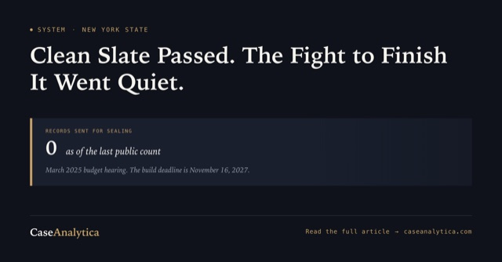
Office of Governor Kathy HochulThe Coalition That Won Clean Slate Isn't Publicly Fighting to Finish It
The groups that spent four years passing New York's Clean Slate Act have moved their public campaigns to other bills. Here's what their own 2026 priorities say, and what's at stake if implementation pressure doesn't pick back up.
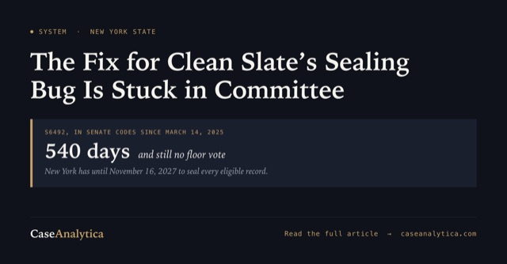
Office of Governor Kathy HochulThe Bill Fixing Clean Slate's Sealing Bug Has Sat in Committee Since March 2025
New York's own court technology division says the Clean Slate Act's sealing language can't process cases with more than one conviction on the same docket. The bill meant to fix it has sat in committee for over a year, while the November 2027 sealing deadline keeps getting closer.

New York's Second Look Act Clears First Committee Vote in 2026
S158 would let someone who served at least ten years ask a different judge to reduce their sentence. It passed the Senate Codes Committee 9-4 in May 2026, the furthest it's gotten since first introduced in 2021. Here's what the bill actually requires.
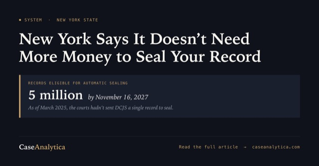
Office of Governor Kathy HochulNew York Says It Doesn't Need More Money to Seal Your Clean Slate Record
State agencies told lawmakers in 2025 they weren't asking for extra funding or staff to build the Clean Slate sealing system, and the court system hadn't sent DCJS a single record yet. Here's what that testimony means for the wait, and why it's really a jobs and housing question.
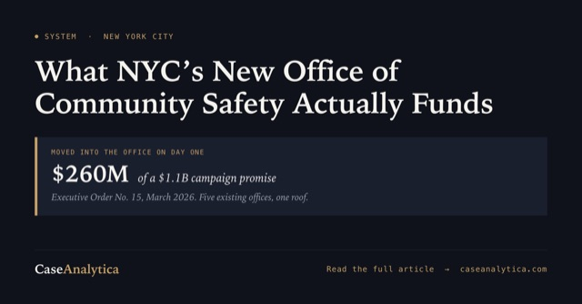
NYC's Office of Community Safety: Mamdani's Campaign Promise Starts Becoming Real
Mayor Mamdani ran on sending care, not just police, to mental health crises and gun violence in the neighborhoods hit hardest by both. Six months into the Office of Community Safety, here's the real money and the real response already reaching Black and Brown New Yorkers.
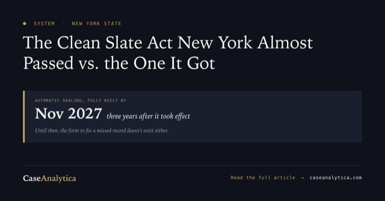
Office of Governor Kathy HochulThe Clean Slate Act New York Almost Passed vs. the One Hochul Signed
Clean Slate wasn't watered down by a backroom amendment. It was negotiated down before it passed, and New York has until 2027 to actually build the system that seals a record. Here's what every year of that gap costs.
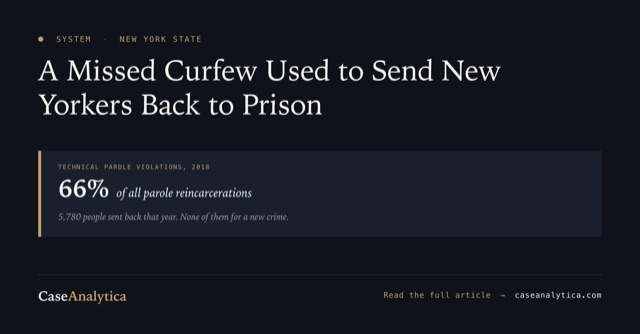
New York Led the Nation in Reincarcerating People for Breaking Parole Rules. What Less Is More Actually Changed
In 2018, New York sent thousands of people back to prison for missing a curfew or an appointment, not a new crime. Here's what the Less Is More Act changed, and what the data since shows about whether it worked.

What Happens After a Murder Arrest in New York: The Jesus Acosta Case and the Limits of Diversion
Jesus Acosta's arrest and arraignment on murder charges in the Bronx and Brooklyn shows how central booking, arraignment, bail, and parole holds actually work, and why New York's diversion programs don't reach a case like this one.

What Happens After an Arrest in NYC: A Queens Chain-Snatching Case Shows the Timeline From Custody to Arraignment
A Queens chain-snatching case involving a 16-year-old shows how booking, arraignment, bail, and diversion actually work after an NYC arrest, and where Raise the Age changes the sequence.
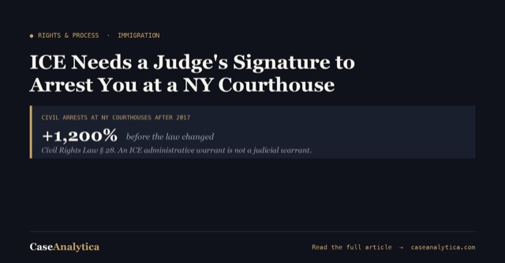
The Protect Our Courts Act: Why ICE Needs a Judicial Warrant to Arrest You at a NY Courthouse
New York's Protect Our Courts Act bars civil arrests at state courthouses unless a judge, not an ICE supervisor, signed the warrant. A federal judge upheld the law in November 2025. Here's what it actually covers.
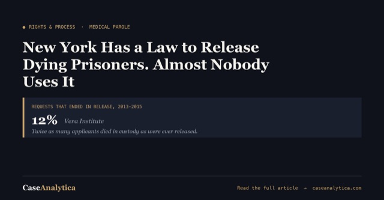
Medical Parole in New York: How a Terminally Ill or Debilitated Person Can Actually Get Out
New York lets DOCCS and the Parole Board release a terminally ill or severely debilitated incarcerated person under Executive Law 259-r and 259-s. A family member can request it directly, but most requests never make it to a hearing.

New York Can Take Your Guns Without a Criminal Charge: The Red Flag Law Explained
New York's red flag law lets a court order guns removed through a civil case, not a criminal one, often before the person involved has spoken to a lawyer. Here's what CPLR Article 63-A actually allows.
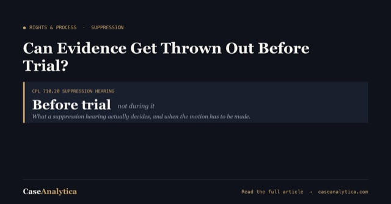
Can Evidence Get Thrown Out Before Trial? What a Suppression Hearing in New York Actually Does
A Mapp, Huntley, or Dunaway motion can get illegally obtained evidence thrown out before a plea is ever discussed. Here's what CPL 710.20 actually lets a defendant challenge.
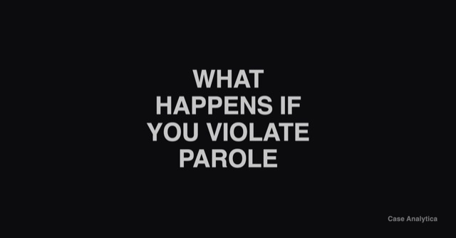
What Happens If You Violate Parole in New York? Executive Law \u00a7 259-i Explained
Parole violation runs on a different law than probation violation, with its own hearings, deadlines, and burden of proof. Here's what Executive Law 259-i actually requires before parole can be revoked.
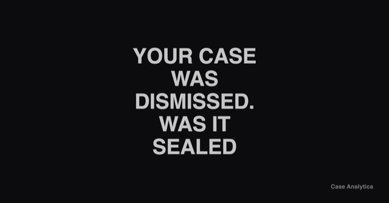
Your Case Was Dismissed. Was Your Arrest Record Sealed? CPL 160.50 Explained
New York automatically seals your arrest record after a dismissal, acquittal, or other favorable result under CPL 160.50, no petition required. Here's what actually gets sealed, and who can still see it.
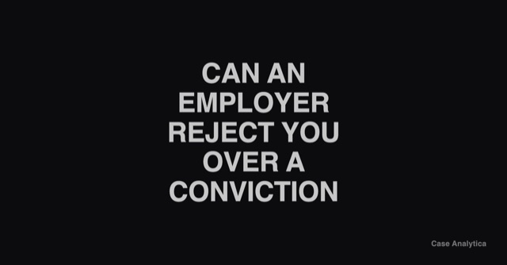
Can a New York Employer Reject You Because of a Conviction? What Correction Law Article 23-A Actually Requires
A conviction on a background check is not, by itself, a legal reason to turn someone away from a job in New York. Correction Law Article 23-A requires an individualized analysis first. Here's what the law actually requires, and the factors that decide it.
Found Unfit to Stand Trial in New York? What CPL Article 730 Actually Allows
A finding of unfit to proceed under CPL Article 730 doesn't end a case, it pauses it. New York can hold someone in psychiatric custody for up to two-thirds of the maximum sentence the top charge carries. Here's how the process actually works.
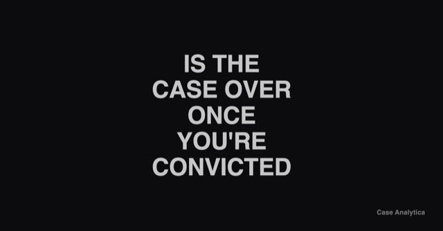
Is the Case Really Over Once You're Convicted? What CPL 440.10 Actually Lets You Do in New York
A conviction isn't always the end of the road. CPL 440.10 lets a New York court vacate a judgment for reasons that never made it onto the record, but it comes with procedural traps that can shut the door for good if you miss them.
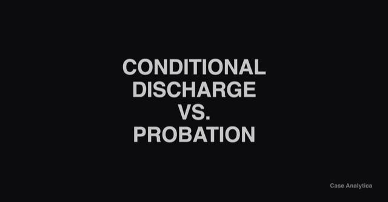
Conditional Discharge vs. Probation in New York: What You're Actually Agreeing To
Both let you avoid prison. Only one puts a probation officer in your life for years. Here's what Penal Law 65.05 and 65.00 actually require, and the question to ask before you agree to either.
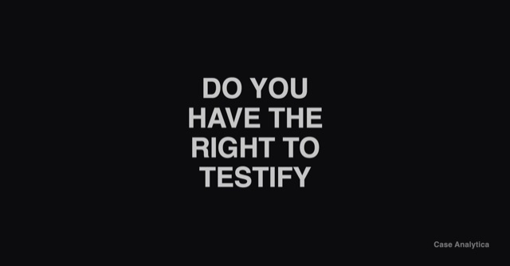
Do You Have the Right to Testify Before the Grand Jury in New York? CPL 190.50 Explained
There is no constitutional right to testify before a New York grand jury. There is a statutory one, under CPL 190.50, and it disappears fast if nobody files the notice in time.
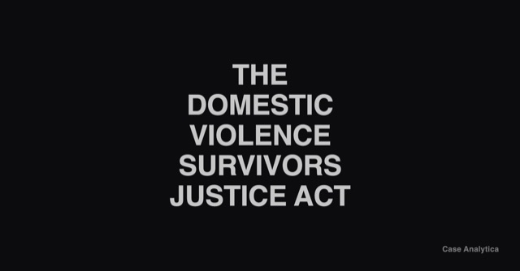
What Is the Domestic Violence Survivors Justice Act in New York? Penal Law 60.12 Explained
Penal Law 60.12 lets a judge hand down a lighter sentence when abuse was a significant reason someone ended up charged. In April 2026, New York's highest court ruled a prosecutor can't make you sign away the hearing that proves it.
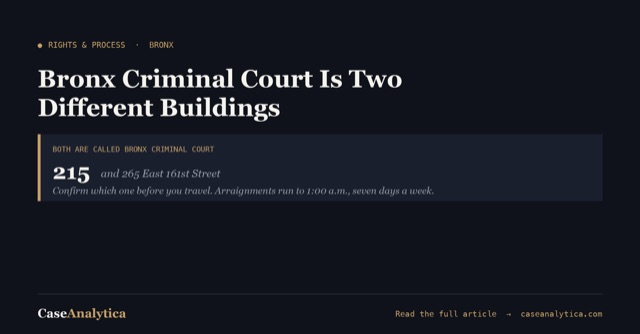
Bronx Criminal Court: Which Building, Which Train, What to Expect
"Bronx Criminal Court" is two different buildings a block and a half apart, 215 and 265 East 161st Street, and both go by that name. How to find out which one you need before you travel, plus arraignment hours that run to 1:00 a.m. seven days a week.
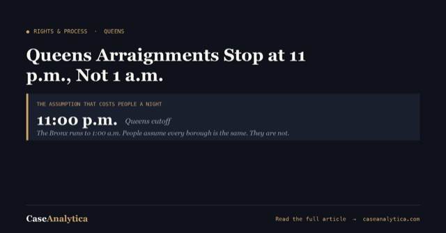
Queens Criminal Court: Getting There, Getting In, and the 11 p.m. Cutoff
Queens arraignments stop at 11:00 p.m., not 1:00 a.m. like the Bronx, and people assume every borough runs the same hours. Where the Kew Gardens courthouse is, how to get in, and which clerk windows close early.
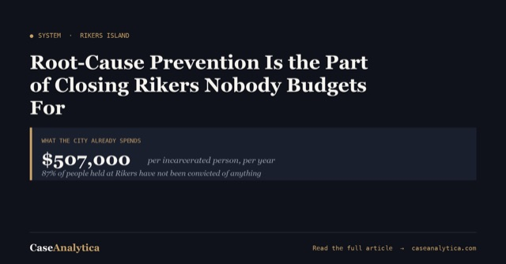
Root-Cause Prevention Is the Part of Closing Rikers Nobody Budgets For
Advocates say closing Rikers means treating housing and mental health needs instead of jailing them. The city already spends $507,000 a year per person there, and 87 percent of them haven't been convicted. Here's what the prevention argument rests on, and where the evidence is thinner than the slogan.
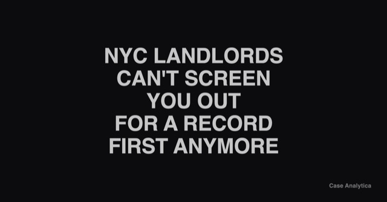
New York City Landlords Can't Screen You Out for a Criminal Record First Anymore: The Fair Chance for Housing Act Explained
Since January 2025, most NYC landlords can't ask about or run a criminal background check until after a conditional offer, and can only count convictions inside a specific lookback window. Here's what the Fair Chance for Housing Act actually restricts.
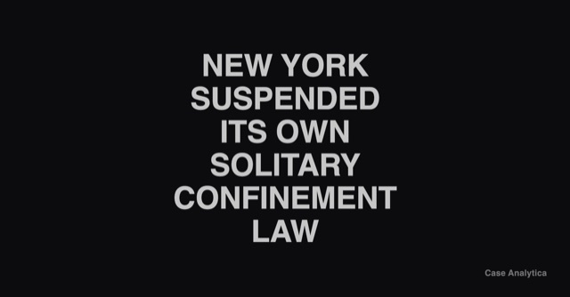
New York Suspended Its Own Solitary Confinement Law. Here's What the HALT Act Still Says
New York capped solitary confinement at 15 consecutive days under the HALT Act. In February 2025, the state suspended it anyway, and a court fight over that suspension, Smalls v. Martuscello, is still open.
Why Rikers Island Should Close, and What Could Actually Replace It
Rikers costs roughly $1,389 a day per person, the borough jails meant to replace it are up to five years behind schedule, and they still won't have enough beds. Here's the closure case, and what already keeps people showing up to court for a fraction of the cost.
How Holding Someone at Rikers Becomes Leverage for a Plea
Research reviewed by the Vera Institute found pretrial detention makes people up to 46 percent more likely to plead guilty. Here's how a bed at Rikers turns into bargaining leverage, and what happens to that leverage if the jail population shrinks.
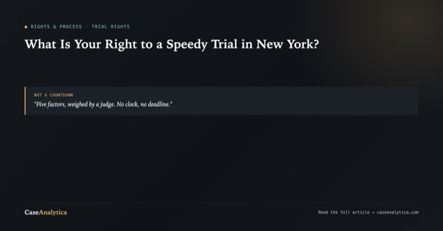
What Is Your Right to a Speedy Trial in New York? CPL 30.20 and the Test Courts Actually Use
New York guarantees a speedy trial under CPL 30.20 and Civil Rights Law 12, but there's no fixed number of days attached to it. Here's the five-factor balancing test courts actually apply, and how it's different from the CPL 30.30 deadline.
What Happens If You Violate Probation in New York? CPL 410.70 Explained
Probation ends the case, until it doesn't. CPL 410.70 lets a judge revoke probation and impose the original sentence on a lower burden of proof, with no jury. Here's how the hearing actually works.
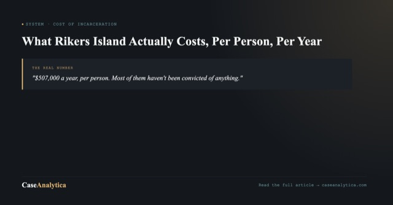
What Rikers Island Actually Costs, Per Person, Per Year
New York City spent $507,000 per incarcerated person in 2023, and most of the people held at Rikers Island haven't been convicted of anything. Here's what the city's own numbers show.
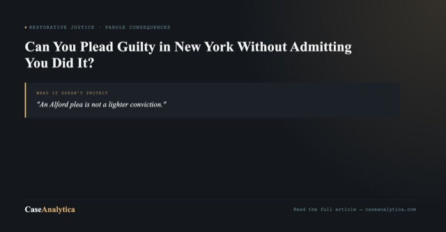
Can You Plead Guilty in New York Without Admitting You Did It? The Alford Plea Explained
New York allows a guilty plea without an admission of guilt, called an Alford plea. New York's own courts have ruled it can still be held against you years later, at a parole hearing.
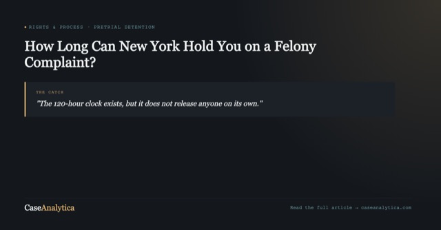
How Long Can New York Hold You on a Felony Complaint? CPL 180.80's 120-Hour Rule
CPL 180.80 says New York must release you on your own recognizance after 120 or 144 hours on a felony complaint with no indictment or hearing. It only works if someone actually applies for it.
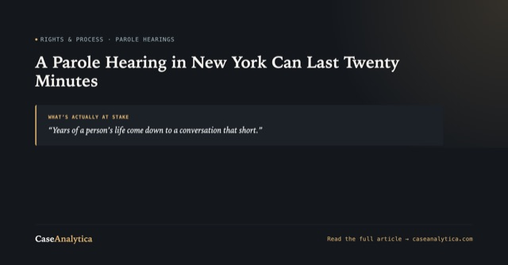
A Parole Hearing in New York Can Last Twenty Minutes: How to Actually Prepare for One
A NY parole hearing usually runs ten to twenty minutes. Here's what the Board actually evaluates, how to build a release plan that holds up, and what to say and never say in the room.

Police Can Take Your Cash Before You're Ever Charged: Civil Asset Forfeiture Under CPLR Article 13-A
New York can seize your cash, your car, or your house without a conviction, sometimes without an arrest. Here's what CPLR Article 13-A actually allows, and the exact question to ask if it happens to you.
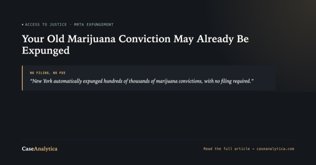
Your Old Marijuana Conviction May Already Be Expunged in New York: What the MRTA Actually Cleared
New York automatically expunged hundreds of thousands of marijuana convictions under the MRTA, no filing and no fee required. Here's exactly which charges qualify, and what to do if yours doesn't.
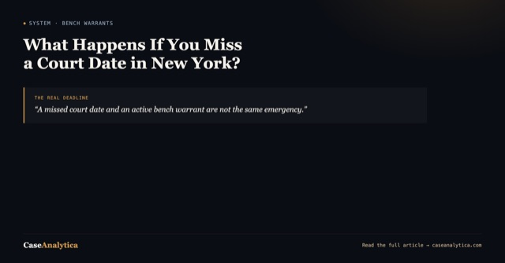
What Happens If You Miss a Court Date in New York? Bench Warrants and the 30-Day Window
A missed court date and an active bench warrant are not the same emergency. Here's what CPL 530.70 actually authorizes, and the statutory 30-day window that decides whether you're also charged with bail jumping.

Can NYPD Stop and Frisk You Without a Reason? CPL 140.50 and Floyd v. City of New York
Reasonable suspicion is a legal standard with an actual definition, not a phrase that excuses any stop. Here's what CPL 140.50 authorizes, what Floyd v. City of New York found NYPD was doing instead, and what to say during a stop.
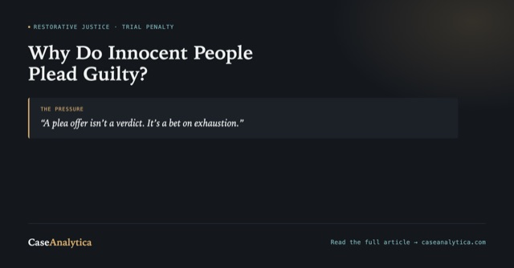
Why Do Innocent People Plead Guilty? The Trial Penalty Behind New York's Guilty-Plea Rate
Nationally, 97 percent of felony convictions in large urban courts come from a guilty plea, not a trial. Here's the pressure that pushes innocent people into that number, and what New York law does and doesn't do about it.
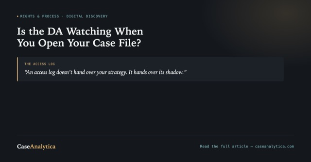
Is the DA Watching When You Open Your Case File? Discovery Platforms and Work Product in NY
Digital evidence platforms log every time a defense file gets opened. That access log can say more about defense strategy than the DA is supposed to see, and New York's work-product rule under CPL 245.65 was written before anyone thought to ask about it.
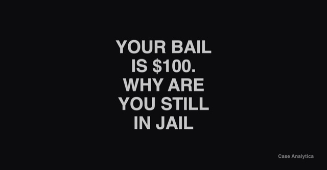
Your Bail Is $100. Why Are You Still in Jail? What a Bail Source Hearing Actually Does
A low bail number isn't the same as being free to go. Here's how a bail source hearing under CPL 520.10 can keep someone in jail for a week or two on bail that was never the real barrier, and the exact question to ask about it.
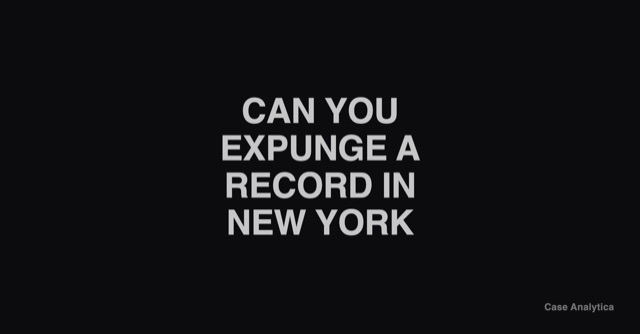
Can You Actually Expunge a Criminal Record in New York? What CPL 160.59 Sealing Really Does
New York doesn't expunge convictions, no matter what that search brings up. Under CPL 160.59, a conviction can be sealed after ten years, but only if you ask, only if it qualifies, and only if the paperwork is filed correctly. Here's what the motion actually requires.
What Is Project Reset in New York? How a Desk Appearance Ticket Can Avoid a Criminal Record
Project Reset lets people arrested in New York City for a low-level misdemeanor avoid prosecution entirely, but only if the person holding the Desk Appearance Ticket finds out about it before the court date. Here's how it actually works, and the exact question to ask.
How Long Can New York Take You to Trial? CPL 30.30 Speedy Trial Rules Explained
CPL 30.30 doesn't promise a trial by a deadline. It sets a clock for when prosecutors have to say they're ready. Here's what the clock actually measures, what stops it, and the question to ask your attorney about it.
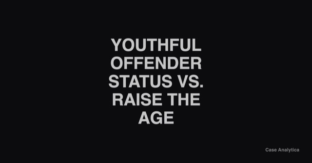
Youthful Offender Status vs. Raise the Age in New York: They're Not the Same Thing
Raise the Age decides which court hears a teenager's case. Youthful Offender status under CPL Article 720 decides what happens to the record afterward. Confusing the two costs people a sealed record they were entitled to ask for.
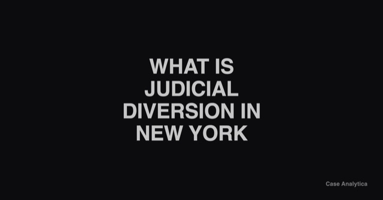
What Is Judicial Diversion in New York? Felony Drug Cases and CPL Article 216
Judicial diversion under CPL Article 216 lets a judge send an eligible felony drug defendant to treatment instead of prison, even over a prosecutor's objection. Here's who qualifies and the exact question to ask.
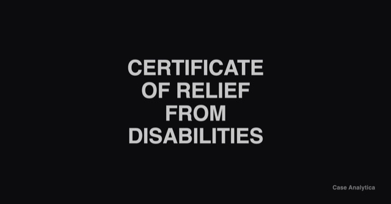
Certificate of Relief from Disabilities in New York: How to Get Your Rights Back After a Conviction
A conviction can block a job, a license, even housing, long after the sentence is served. A Certificate of Relief from Disabilities doesn't erase the conviction. It removes the legal barrier anyway. Here's who qualifies and how to ask for one.
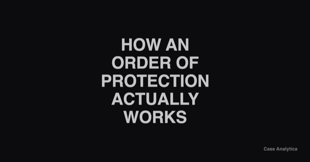
How a Criminal Court Order of Protection Actually Works in New York
An order of protection issued in a criminal case isn't the same thing as one from Family Court, and violating it is its own separate crime. Here's how it gets issued, how long it lasts, and what happens if it's broken.
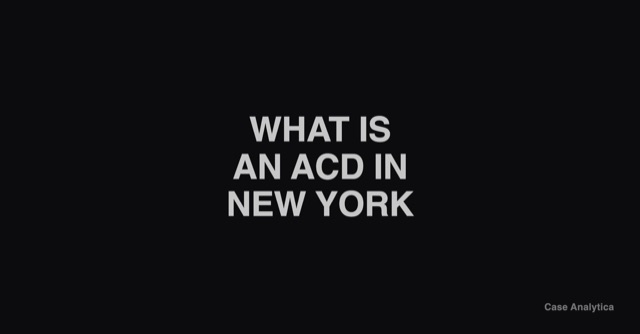
What Is an ACD in New York? Adjournment in Contemplation of Dismissal, Explained
An ACD isn't a diversion program by name, but it works like one: complete a clean adjournment period and the case is dismissed and sealed. Here's when it applies and why it's not automatic.
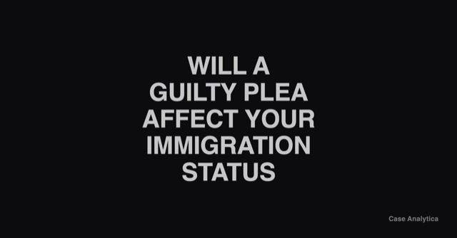
Will Pleading Guilty Affect Your Immigration Status in New York?
New York law requires a judge to read a warning about deportation before a felony plea. It's a formality, not an explanation. Here's what that warning actually means.
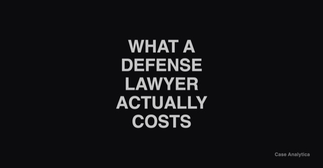
How Much Does a Criminal Defense Lawyer Actually Cost in New York?
Retainers, flat fees, hourly rates: what actually drives the price of private counsel in New York, and where that leaves you if a full-time attorney isn't in the budget.
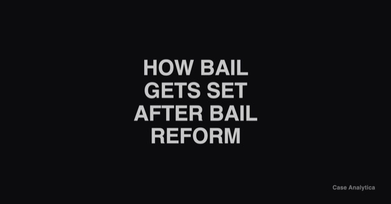
How Bail Actually Gets Set in New York After Bail Reform
Bail reform didn't eliminate cash bail, it narrowed it. What changed in 2019, what got added back in 2020 and 2022, and the question to ask about why bail was set the way it was.
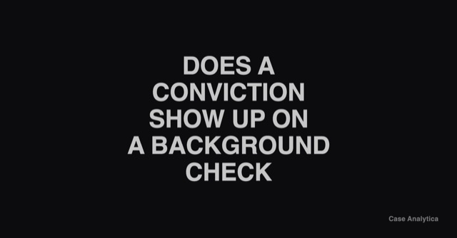
Does a Conviction Actually Show Up on a Background Check in New York?
The direct answer, and how it connects to the Clean Slate Act's sealing timeline, so a job application doesn't feel like a second sentence.

Quick Answers: Just Been Arrested in New York (FAQ)
Direct answers to the questions people actually search in the first hours after an arrest, each linked to the full explanation.
The Bet Every Plea Deal Is Making
A plea offer isn't a neutral number. It's a bet that you and your attorney won't take the case to trial. Here's how to tell if that bet is a safe one.
The Question Before You Plead Guilty
Almost every criminal case ends in a guilty plea, not a trial. Here's the pressure that drives that, and the one question that can change the outcome.
The Two Failures Nobody Warns You About: Information and Representation After a NY Arrest
Two things break down at almost the same moment after a New York arrest: nobody explains what's happening, and nobody guarantees someone with the time to fight for you. Start here.
The Hours Before You Get a Lawyer: New York's Right-to-Counsel Gap
New York guarantees a lawyer at arraignment, not before it. What the Hurrell-Harring settlement actually fixed, and what still happens in the hours before that first court appearance.
Why Your Public Defender Might Be Carrying 100+ Cases (And What NY Law Says About It)
New York's own standards cap public defenders at roughly 300 weighted cases a year, and many offices still can't meet that. Here's what the numbers mean, county by county.
The Information Nobody Hands You: Court Dates, Discovery, and Diversion You Have to Ask About Yourself
Discovery reform fixed what evidence prosecutors have to turn over. It didn't fix whether anyone explains it to you. Here's exactly what falls through the cracks.
When You Don't Understand the Language of Your Own Case: Interpreters, Literacy, and Access in NY Courts
About 1.8 million New Yorkers have limited English proficiency and need a court interpreter. The state's interpreter workforce has shrunk by double digits since 2019.
NYC Put $6.5 Million Into Restorative Justice in 2024. Here's What It Funded
16 organizations, real circles for real people: students, domestic violence survivors, people in addiction recovery, teens arrested on gun charges. This isn't theory anymore.
You've Just Been Arrested in New York: What You're Actually Facing, and the Question That Changes Everything
What the first hours and days after an arrest actually look like, and the one question about restorative justice that has to be asked before a plea, not after.

What Actually Happens After an Arrest in New York State
From the moment of arrest to arraignment, discovery, and sentencing: the full process explained in plain language, so you're not learning these terms for the first time in a courtroom hallway.
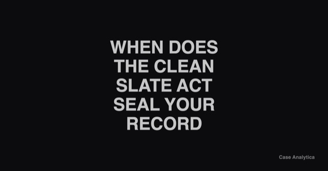
Office of Governor Kathy HochulThe Clean Slate Act: When Does Your NY Record Actually Get Sealed?
New York began automatically sealing eligible criminal records in November 2024. Here's the real timeline, the exclusions, and how to find out where your specific record stands.
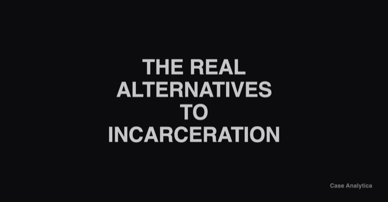
Restorative Justice in New York: The Real Alternatives to Incarceration
Beyond the two-camp framing of 'lock them up' or 'let them off easy': victim-offender dialogue, diversion programs, and community-based alternatives actually running in New York right now.
Need help with a specific case?
These articles are general education. If it's your family going through this right now, book a free intake call.